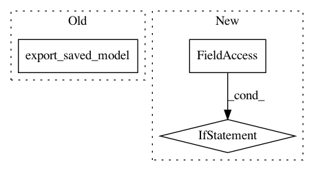

d2694eacb1fdd698a7629271d43f99acf5e75b34,models/official/amoeba_net/amoeba_net.py,,main,#Any#,319
Before Change
time_hook.compute_speed(len(results) * eval_batch_size)))
elif mode == "export_savedmodel":
tf.logging.info("Starting exporting saved model ...")
image_classifier.export_saved_model(
export_dir_base=model_dir + "/export_savedmodel/",
serving_input_receiver_fn=build_tensor_serving_input_receiver_fn(
[hparams.image_size, hparams.image_size, 3],
batch_size=hparams.eval_batch_size),
as_text=True)
else: // default to train mode.
current_step = _load_global_step_from_checkpoint_dir(model_dir)
total_step = int(hparams.num_epochs * train_steps_per_epoch)
if current_step < total_step:
After Change
serving_input_receiver_fn=build_image_serving_input_receiver_fn(
serving_shape),
as_text=True)
if FLAGS.add_warmup_requests:
write_warmup_requests(
export_path,
FLAGS.model_name,
hparams.image_size,
batch_sizes=FLAGS.inference_batch_sizes)
if __name__ == "__main__":
tf.logging.set_verbosity(tf.logging.INFO)
app.run(main)
In pattern: SUPERPATTERN
Frequency: 3
Non-data size: 3
Instances
Project Name: tensorflow/tpu
Commit Name: d2694eacb1fdd698a7629271d43f99acf5e75b34
Time: 2019-01-15
Author: solitarylord@gmail.com
File Name: models/official/amoeba_net/amoeba_net.py
Class Name:
Method Name: main
Project Name: tensorflow/tpu
Commit Name: 36960578e601b73ab44b82a10960e31c05d2465f
Time: 2019-05-13
Author: solitarylord@gmail.com
File Name: models/official/retinanet/retinanet_main.py
Class Name:
Method Name: main
Project Name: tensorflow/magenta
Commit Name: 452904c476e721ba22620d494d9222fbb92ff99c
Time: 2018-05-09
Author: jacob.howcroft@gmail.com
File Name: magenta/models/coconet/export_saved_model.py
Class Name:
Method Name: main